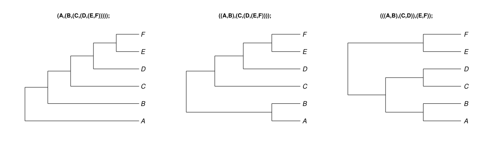
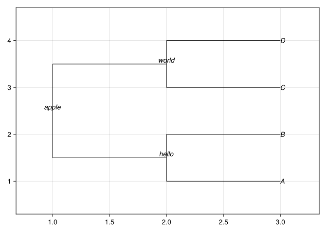
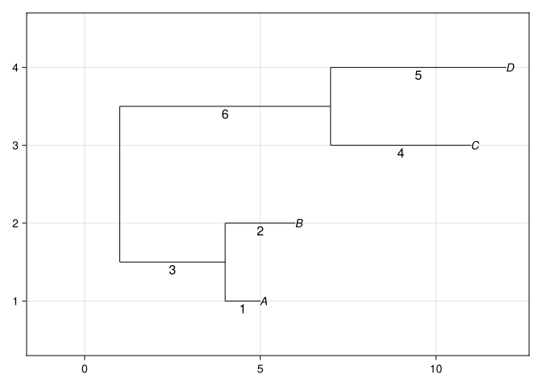
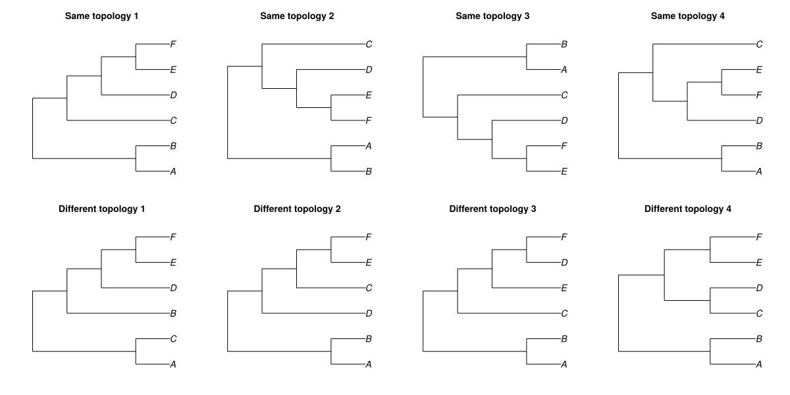

The Newick data format
A Newick expression represents a phylogeny as nested text. Parentheses record hierarchical relationships, labels identify nodes, and optional numbers record branch lengths.
This primer describes the serialized format. The phylogeny representations tutorial explains how Julia parses Newick content and reads Newick files.
1 Newick tree expressions
The following expression represents a phylogeny with 5 labeled tips:
((A,B),(C,(D,E)));The core punctuation is:
| Symbol | Meaning | Example |
|---|---|---|
, |
Separate sibling nodes. | (A,B) |
( and ) |
Enclose the descendants of 1 internal node. | ((A,B),C) |
: |
Introduce the incoming branch length for a node. | A:0.5 |
; |
Terminate 1 phylogeny expression. | (A,B); |
Tip nodes appear as labels such as A and B. A pair of parentheses represents an internal node, and the comma-separated expressions inside the parentheses represent its immediate descendants.
2 Read a Newick expression from the inside out
Consider this formatted expression:
(
(A,B)AB,
(C,(D,E)DE)CDE
)root;(A,B)ABgroupsAandBand labels their ancestorAB.(D,E)DEgroupsDandEand labels their ancestorDE.(C,(D,E)DE)CDEjoinsCto theDEclade and labels their ancestorCDE.- The outer parentheses join
ABandCDEand label the rootroot.
Nested parentheses can describe pectinate, balanced, bifurcating, or multifurcating topologies.
3 Internal-node labels
Text immediately after an internal node’s closing parenthesis labels that node:
((A,B)hello,(C,D)world)apple;The labels hello and world identify 2 internal nodes. The final label apple identifies the root.

4 Branch lengths
A colon followed by a number records the length of the branch leading to a node:
((A:1,B:2):3,(C:4,D:5):6):7;
Branch lengths may represent time, expected substitutions, or another edge-associated quantity. Their biological meaning comes from the analysis or data source rather than from Newick punctuation itself.
5 Labels and branch lengths together
A node label precedes its branch length:
((A:1,B:2)hello:3,(C:4,D:5)world:6)root:7;For an internal node, the order is:
( descendants ) node_label : incoming_branch_lengthThe node label and branch length are independently optional. The colon is required when a branch length is present.
6 Portable node labels
A conservative label subset works across most phylogenetic software:
- lowercase and uppercase letters;
- numerals;
- periods; and
- underscores.
(Agkistrodon_contortrix,Agkistrodon.piscivorus);The original Newick convention interprets an underscore in an unquoted label as a blank. Some software preserves the underscore instead. Normalize labels deliberately when their exact spelling must survive a multi-program workflow.
7 Reserved characters and quoted labels
An unquoted label cannot contain whitespace or these syntax characters:
( ) [ ] ' : ; ,Use single quotes when a label requires spaces or syntax punctuation:
('Population 01 (N)','Population 01 (S)');Represent a literal single quote inside a quoted label with 2 consecutive single quotes. Quoted-label support and underscore handling can still vary among software implementations, so simple normalized labels remain preferable for portable pipelines.
8 Newick data files
A Newick data file contains 1 or more terminated Newick expressions:
(A,(B,(C,D)));
(D,(A,(B,C)));
(A,(C,(D,B)));The semicolon terminates each expression. Placing 1 expression on each line is a readable convention, not a format requirement. Outside an unquoted label or branch length, whitespace and line breaks may separate syntax elements.
NEXUS trees blocks also use Newick expressions, but NEXUS adds its own block structure and statements around those expressions.
9 Interpretation checkpoint
Interpret this expression before plotting it:
((A:0.5,B:0.5)AB:1.0,C:1.5)root;- Identify the sister tips.
- Identify the internal-node label.
- Identify the branch entering that internal node.
- Compare the total root-to-tip length for
A,B, andC.
All 3 root-to-tip lengths equal 1.5.
10 Topology exercises
The first row below contains alternative Newick representations of the same topology. Rotating descendants around an internal node changes the drawing but not the relationships. Each tree in the second row has a different topology.

For each expression:
- List the clades implied by its nested parentheses.
- Rewrite the expression using at least 1 node rotation.
- Confirm which relationships remain unchanged.
- Save several terminated expressions in 1 Newick file.